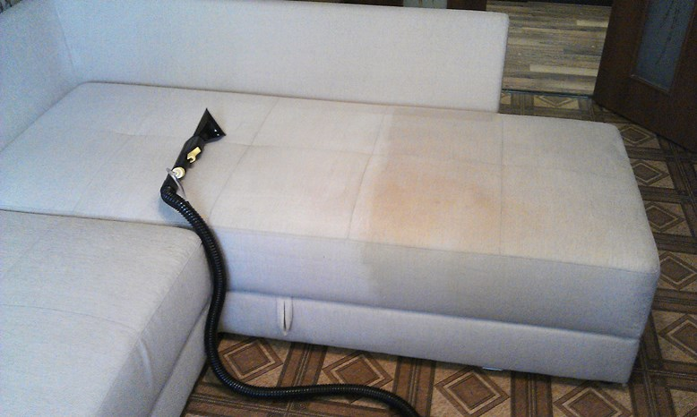

Химчистка диванов
Наши услуги
Одним из основных направлений деятельности компании CleanRoom является
предоставление профессиональных услуг по химчистке диванов в Минске.
Эта услуга особенно востребована, когда диваны становятся
загрязненными и требуют особого внимания для восстановления своей
свежести и чистоты. Химчистка диванов также является популярной после
проведения ремонтных работ или при необходимости удаления пятен и
запахов.
Copy Мы предлагаем высококачественную химчистку диванов в офисных и
жилых помещениях. Наша команда профессионалов обладает обширным опытом
и использует передовое оборудование и специальные химические средства,
чтобы достичь безупречных результатов. Мы гарантируем, что ваши диваны
будут очищены от грязи, пыли, пятен и неприятных запахов, и
восстановят свою первоначальную свежесть и внешний вид.
Наша команда всегда готова приехать в удобное для вас время и
провести химчистку диванов в вашем офисе или доме. Мы понимаем, что
чистота и уют играют важную роль в создании комфортной обстановки,
поэтому предлагаем профессиональный и надежный сервис химчистки
диванов.
Какие виды услуг мы оказываем
- Мы проводим эффективное устранение различного рода пятен с помощью специальных химических средств и профессионального оборудования.
- Мы предлагаем профессиональное избавление от неприятных запахов и очищение от засаленности обивки
- Приведение неравномерного цвета мебели в однотонный и восстановление первоначального цвета. 
Наши специалисты готовы оперативно и профессионально выполнить химчистку диванов в вашем офисе или доме. Не стесняйтесь связаться с нами прямо сейчас - мы всегда готовы приехать и обеспечить чистоту и свежесть вашей мягкой мебели!
 +375297762648
+375297762648Наши Клиенты


Химчистка диванов
Наши специалисты имеют обширный опыт работы с различными типами
диванов и обивок, включая тканевые, кожаные и другие материалы. Мы
готовы эффективно и профессионально выполнить химчистку вашего
дивана, независимо от его состояния и типа загрязнений.
После проведения ремонтных работ или использования дивана в течение
продолжительного времени, на обивке могут появиться следы краски,
лака, клея, штукатурки или цемента. Наши специалисты легко справятся
с такими загрязнениями и обеспечат их безопасное и эффективное
удаление, не повреждая обивку дивана.
Мы также специализируемся на работе с различными типами тканей и кожи, и применяем соответствующие методы и химические средства, чтобы достичь оптимальных результатов при химчистке дивана. Наша команда гарантирует, что ваш диван будет очищен от пятен, грязи и неприятных запахов, и вернется в свежее и привлекательное состояние.
Стоимость услуг по химчистке диванов
Компания CleanRoom предлагает конкурентные цены на услуги химчистки диванов. Мы также предоставляем скидки при заказе большого объема работ или регулярного сотрудничества. При обращении к нам, наш менеджер проведет оценку состояния дивана и обсудит ваши пожелания. Мы учтем размер дивана, его тип обивки, степень загрязнения и другие факторы, чтобы предоставить вам точную стоимость услуги. Мы стремимся предложить прозрачные и адекватные цены, учитывая особенности каждого конкретного заказа.
| Вид дивана | Цена |
|---|---|
| Прямой диван | от 70 BYN |
| Угловой диван | от 90 BYN |
| Кухонный уголок | от 45 BYN |
| Кресло | от 15 BYN |
Процесс профессионального мытья окон
- Удаление поверхностных загрязнений с рам, подоконников и стекол.
- Применение специализированных чистящих средств для удаления стойких загрязнений на стеклах.
- Тщательная чистка стекол без разводов.
- Ополаскивание всех поверхностей с применением средств, предотвращающих скопление грязи и бактерий.
- Полировка стекол с использованием качественных моющих средств и профессиональной клининговой техники для придания сияющего вида.
- Проверка качества выполненных работ.
Почему выбирают CleanRoom?
- Мы оперативно предоставляем услуги в любое удобное время.
- Работы выполняет слаженная команда опытных сотрудников, что гарантирует идеальный результат и сохранность целостности стекол и фасадов.
- Наши клинеры используют современный инвентарь и эффективные чистящие средства, соответствующие экологическим нормативам и являющиеся безопасными для здоровья людей.
- Мы ответственно подходим к срокам сдачи заказов и никогда не нарушаем рабочий процесс в компании клиента.
- Стоимость проведения химчистки диванов в CleanRoom не бьет по бюджету заказчика.
Как мы работаем
Вы оформляете свою уборку на сайте
Наши клинеры приезжают и начинают работу
Вы оплачиваете уборку